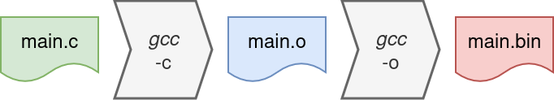

2 - Compiling Bare Metal
When you learned to write C, you might have been in touch with compiling already. In case you’re a master at compiling and cross compiling, this section is a refresher. In the other case (which also includes those that only clicked the Compile-button in an IDE), this section will guide you through the most import aspects (for this course).
Compiling is typically used to describe the proces that converts the C sources into a binary that can be executed. When looking into detail what happens, it turns out to be a bit more complex than simply invoking gcc.
cli@hwswcd:~/$> gcc -o main.bin main.c


A more accurate use of Compiling is to indicate the part of the toolchain that converts source code into machine code. (Although this is not entirely correct, going into the details falls out of the scope of this course.) The output of the compilers are called object files (.o) which need to be stiched together by Linking.
cli@hwswcd:~/$> gcc -c main.c
cli@hwswcd:~/$> gcc -o main.bin main.o
When your entire program only consists out of a single file, it is (probably) not worth going into this much detail. Luckily tools exists that nicely hide this away for the programmer. In this course Make will be used. To use make, the programmer (as in: YOU) need to work with a Makefile. (Trust me, you’ll be thankful for it.)
The linker is the tool that connects everything together and fills in the dots. This example shows a very simple C program that prints the classical message to the output. However there is not many code written, the linker has work to do. For example, what is this printf() function? Where is it coming from and what does it do exactly? As you might know already, this comes from libraries that have done some boring, heavy lifting for you. This is just a simple example of where the linker jumps in to hook-up everything together.
#include <stdio.h>
int main(void) {
printf("Hello world!\n");
return 0;
}
If the machine on which the compiler and linker are executed differs from the target machine that is to execute the program, the term cross-compilation is used. Probably you have already used a cross compiler before (unknowingly), or haven’t you programmed an Arduino yet? Although you compiled-and-linked the code on your laptop, the program was executed by another processor.
All the code in this course will also be cross-compiled. The toolchain that is used is official RISC-V C and C++ cross-compiler. You can download and install it for yourself from GitHub. For more information on installing this toolchain please use Google (e.g. here).
Ofcourse you are warmly invited to get the toolchain up and running on your own machines. However, this is not always easy and it can be a dive into a rabbit hole. This cross-compiler is installed on Roger, especially for you!
Bare metal
Bare metal programming is writing software that is not running on an Operating System (OS). You probably have done this (maybe unknowingly) while programming an Arduino or another microprocessor. Running without an OS has one major disadvantage: there is no OS. This implies that everything a programmer needs, has to be provided. In the C-example of the previous section, two functions have been used: print_hex(x, y); and print_chr(x);. Code for these functions has to be provided too.
#ifndef PRINT_H
#define PRINT_H
#define OUTPORT 0x80000000
void print_chr(char ch);
void print_str(const char *p);
void print_hex(unsigned int val, int digits);
#endif
#include "print.h"
void print_chr(char ch)
{
*((volatile unsigned int*)OUTPORT) = ch;
}
void print_str(const char *p)
{
while (*p != 0)
*((volatile unsigned int*)OUTPORT) = *(p++);
}
void print_hex(unsigned int val, int digits)
{
for (int i = (4*digits)-4; i >= 0; i -= 4)
*((volatile unsigned int*)OUTPORT) = "0123456789ABCDEF"[(val >> i) & 255];
print_chr('\n');
}
With these three functions, there is an opportunity to print a character, a string (as in: a list of characters), or a hexadecimal value. A logical question would be: “Where is my character (or other variable) printed ?”. The answer lies in this line:
*((volatile uint32_t*)OUTPORT) = ch;Let’s break this down for those whose C-skills are a bit rusty. The define OUTPORT makes sure that, everywhere in the code this define is substituted by the 32-bit number 0x80000000. During assignment, this value is type-cast to an unsigned 32-bit pointer ((volatile uint32_t*)). The keyword volatile states that the content of a variable can also be altered from another source. This is important!! Otherwise the optimisation of the C-compiler might optimise-out certain lines of C-code. Finally, that address is dereferenced ( *(<address>) ) to target the memory that is located at the provided address.
To make the code even more readable, another define can be made that hides this low level C-code.
#ifndef PRINT_H
#define PRINT_H
#define HWSWCD_PRINT_BASE_ADDRESS 0x80000000
#define HWSWCD_PRINT *((volatile unsigned int*)HWSWCD_PRINT_BASE_ADDRESS)
void print_chr(char ch);
void print_str(const char *p);
void print_hex(unsigned int val, int digits);
#endif
#include "print.h"
void print_chr(char ch) {
HWSWCD_PRINT = ch;
}
void print_str(const char *p) {
while (*p != 0)
HWSWCD_PRINT = *(p++);
}
void print_hex(unsigned int val, int digits) {
for (int i = (4*digits)-4; i >= 0; i -= 4)
HWSWCD_PRINT = "0123456789ABCDEF"[(val >> i) & 255];
print_chr('\n');
}
When it comes to compiling, more files are involved. When the linker looks at the generated object files, it can now find all the necessary functions.
Note that also the object files can be inspected. The compiler typically includes a tool for this. In case of the RISC-V crosscompiler this tool is invoked like this: riscv32-unknown-elf-objdump -x build/print.o.
build/print.o: file format elf32-littleriscv
build/print.o
architecture: riscv:rv32, flags 0x00000011:
HAS_RELOC, HAS_SYMS
start address 0x00000000
Sections:
Idx Name Size VMA LMA File off Algn
0 .text 0000006c 00000000 00000000 00000034 2**2
CONTENTS, ALLOC, LOAD, RELOC, READONLY, CODE
1 .data 00000000 00000000 00000000 000000a0 2**0
CONTENTS, ALLOC, LOAD, DATA
2 .bss 00000000 00000000 00000000 000000a0 2**0
ALLOC
3 .rodata.str1.4 00000011 00000000 00000000 000000a0 2**2
CONTENTS, ALLOC, LOAD, READONLY, DATA
4 .comment 0000001a 00000000 00000000 000000b1 2**0
CONTENTS, READONLY
5 .note.GNU-stack 00000000 00000000 00000000 000000cb 2**0
CONTENTS, READONLY
6 .riscv.attributes 0000001c 00000000 00000000 000000cb 2**0
CONTENTS, READONLY
SYMBOL TABLE:
00000000 l df *ABS* 00000000 print.c
00000000 l d .text 00000000 .text
00000000 l d .data 00000000 .data
00000000 l d .bss 00000000 .bss
00000000 l d .rodata.str1.4 00000000 .rodata.str1.4
00000000 l d .note.GNU-stack 00000000 .note.GNU-stack
00000000 l d .comment 00000000 .comment
00000000 l d .riscv.attributes 00000000 .riscv.attributes
00000000 g F .text 0000000c print_chr
0000000c g F .text 0000001c print_str
00000028 g F .text 00000044 print_hex
RELOCATION RECORDS FOR [.text]:
OFFSET TYPE VALUE
00000014 R_RISCV_BRANCH .L4
00000024 R_RISCV_JAL .L3
00000030 R_RISCV_HI20 .LC0
00000030 R_RISCV_RELAX *ABS*
00000038 R_RISCV_BRANCH .L7
00000050 R_RISCV_LO12_I .LC0
00000050 R_RISCV_RELAX *ABS*
00000068 R_RISCV_JAL .L6
build/firmware.o: file format elf32-littleriscv
build/firmware.o
architecture: riscv:rv32, flags 0x00000011:
HAS_RELOC, HAS_SYMS
start address 0x00000000
Sections:
Idx Name Size VMA LMA File off Algn
0 .text 00000000 00000000 00000000 00000034 2**2
CONTENTS, ALLOC, LOAD, READONLY, CODE
1 .data 00000000 00000000 00000000 00000034 2**0
CONTENTS, ALLOC, LOAD, DATA
2 .bss 00000000 00000000 00000000 00000034 2**0
ALLOC
3 .rodata.str1.4 0000000e 00000000 00000000 00000034 2**2
CONTENTS, ALLOC, LOAD, READONLY, DATA
4 .text.startup 0000001c 00000000 00000000 00000044 2**2
CONTENTS, ALLOC, LOAD, RELOC, READONLY, CODE
5 .comment 0000001a 00000000 00000000 00000060 2**0
CONTENTS, READONLY
6 .note.GNU-stack 00000000 00000000 00000000 0000007a 2**0
CONTENTS, READONLY
7 .riscv.attributes 0000001c 00000000 00000000 0000007a 2**0
CONTENTS, READONLY
SYMBOL TABLE:
00000000 l df *ABS* 00000000 firmware.c
00000000 l d .text 00000000 .text
00000000 l d .data 00000000 .data
00000000 l d .bss 00000000 .bss
00000000 l d .rodata.str1.4 00000000 .rodata.str1.4
00000000 l d .text.startup 00000000 .text.startup
00000000 l d .note.GNU-stack 00000000 .note.GNU-stack
00000000 l d .comment 00000000 .comment
00000000 l d .riscv.attributes 00000000 .riscv.attributes
00000000 g F .text.startup 0000001c main
00000000 *UND* 00000000 print_str
RELOCATION RECORDS FOR [.text.startup]:
OFFSET TYPE VALUE
00000000 R_RISCV_HI20 .LC0
00000000 R_RISCV_RELAX *ABS*
00000008 R_RISCV_LO12_I .LC0
00000008 R_RISCV_RELAX *ABS*
00000010 R_RISCV_CALL_PLT print_str
00000010 R_RISCV_RELAX *ABS*
00000018 R_RISCV_JAL .L2
Booting
Typically, the one function that has to be present in every C-program is the main() function. This function is called by the OS to start of the program. As in bare metal programming there is no OS, some form of booting-process needs to be defined. Assembly to the rescue!!
A short assembly file can jump in and do that job. This assembly code will do the following:
- initialise all the registers of the register file to 0x0
- initialise the stack pointer (x2 - sp) to 4096 (=0x00001000)
- jump to the main function and backup the program counter (x1 - ra)
- create and endless loop to catch a returning main function
One thing to note is the line .global start. This line makes the start function visible outside this assembly file. As this function is going to be called from outside, this line is NOT optional.
Then there is the line .section .init which is needed. This tells the compiler that the code that follows has to be compiled under a section with the name init. This will later be necessary for the linking.
This assembly file is compiled in a similar way as the c-files. An object file is generated which can be inspected. Note that 0 bytes are allocated to the .text section and 88 bytes are present in the .init section.
build/start.o: file format elf32-littleriscv
build/start.o
architecture: riscv:rv32, flags 0x00000011:
HAS_RELOC, HAS_SYMS
start address 0x00000000
Sections:
Idx Name Size VMA LMA File off Algn
0 .text 00000000 00000000 00000000 00000034 2**2
CONTENTS, ALLOC, LOAD, READONLY, CODE
1 .data 00000000 00000000 00000000 00000034 2**0
CONTENTS, ALLOC, LOAD, DATA
2 .bss 00000000 00000000 00000000 00000034 2**0
ALLOC
3 .init 00000088 00000000 00000000 00000034 2**0
CONTENTS, ALLOC, LOAD, RELOC, READONLY, CODE
4 .riscv.attributes 0000001a 00000000 00000000 000000bc 2**0
CONTENTS, READONLY
SYMBOL TABLE:
00000000 l d .text 00000000 .text
00000000 l d .data 00000000 .data
00000000 l d .bss 00000000 .bss
00000000 l d .init 00000000 .init
00000084 l .init 00000000 done
00000000 l d .riscv.attributes 00000000 .riscv.attributes
00000000 g .init 00000000 start
00000000 *UND* 00000000 main
RELOCATION RECORDS FOR [.init]:
OFFSET TYPE VALUE
00000080 R_RISCV_JAL main
00000084 R_RISCV_JAL done
.global start
.section .init
start:
/* zero-initialize all registers */
addi x1, zero, 0
addi x2, zero, 0
addi x3, zero, 0
addi x4, zero, 0
addi x5, zero, 0
addi x6, zero, 0
addi x7, zero, 0
addi x8, zero, 0
addi x9, zero, 0
addi x10, zero, 0
addi x11, zero, 0
addi x12, zero, 0
addi x13, zero, 0
addi x14, zero, 0
addi x15, zero, 0
addi x16, zero, 0
addi x17, zero, 0
addi x18, zero, 0
addi x19, zero, 0
addi x20, zero, 0
addi x21, zero, 0
addi x22, zero, 0
addi x23, zero, 0
addi x24, zero, 0
addi x25, zero, 0
addi x26, zero, 0
addi x27, zero, 0
addi x28, zero, 0
addi x29, zero, 0
addi x30, zero, 0
addi x31, zero, 0
/* set stack pointer */
lui sp, %hi(4*1024)
/* call main */
jal ra, main
done:
j done